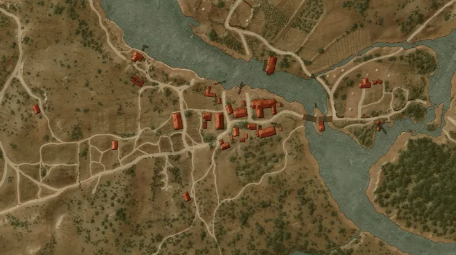
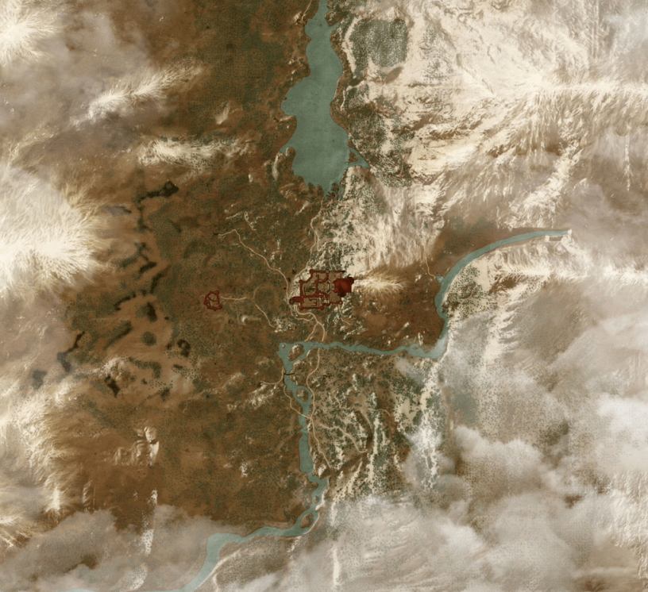

PL

It is one of the main action locations in the series and is the political and cultural center of the kingdom of Temeria.
The city is home to various buildings such as castles, cathedrals, taverns and stores, and is home to a wide variety of characters,
including merchants, craftsmen and members of the aristocracy. In Wyzima, the player can carry out missions, make purchases and talk to other characters,
which allows him to gain information and improve his skills.

It is the largest and richest city in the game world, as well as an important center of trade and politics. In Novigrad, the player can carry out missions,
make purchases and talk to other characters, as well as use services such as a jeweler, an enchanter and others.
The city is also home to a number of influential organizations, including clergy and religious orders, which adds an extra dimension to its political and social reality.
In Novigrad, the player can discover many secrets and mysteries, as well as fight various opponents and make difficult decisions that will affect the further course of the game.

The city is portrayed as large, crowded and vibrant, with a dynamic commercial and cultural scene.
Oxenfurt is famous for its academies of higher learning and prestigious schools of magic, which attracts students and scholars from around the world.
The city also has a lively port, which is used by traders, travelers and sailors to trade and transport goods to other parts of the world.
All in all, Oxenfurt is portrayed as a crowded and cosmopolitan city, full of life, opportunity and excitement.

It is depicted as a rural area, located in the Northern Lands, known for its hills, dense forests and picturesque villages.
The residents of White Orchard are mainly engaged in agriculture, animal husbandry and handicrafts. The area is also known for its beautiful vineyards and wine production.
In The Witcher 3: Wild Gon, White Orchard is one of the first places where the player explores the game world, and its inhabitants are an important part of the gameplay,
providing knowledge and commissioning quests. All in all, White Orchard is a charming and lively region, away from the hustle and bustle of the city, but also full of challenges and mysteries.

It is the home of the Witcher Guild, known for educating new Witchers and as a place to store extremely valuable artifacts and secrets about the Witcher arts.
Kaer Morhen is considered one of the most secluded and safe places in the world, and its walls protect the witches from outside threats.
In The Witcher 3: The Wilder Gon, Kaer Morhen plays an important role in the storyline and is the main location of the game's ending. Overall,
Kaer Morhen is an important place for the history and culture of the Witchers, and its walls hide many secrets and dangers.